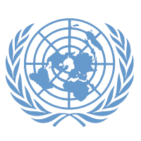

Model United Nations — Student Guide
Three units. Thirty-eight lessons. From the history of the UN to running your own committee session — everything you need in one place.
Start here
This site supports your entire MUN course. Use this page to find where you are and what you need right now.
What to have open in committee
Two tools you'll return to most. Both are designed for real-time use.
From beginner to delegate
Three units, one continuous arc. Each unit builds directly on the previous one.
Find what you need
Not sure where to go? These task-based pathways take you directly to the right tools for what you're working on right now.
What is DSP MUN?
"When individual countries pursue national interests, how does the world pursue common ideals?"
DSP MUN is a three-unit Model United Nations programme run through DSP English Hub for students in grades 10–12. Over 38 lessons and approximately 16 weeks, students move from the historical origins of the United Nations to conducting their own fully simulated committee session — in English.
The programme integrates academic English skills — research, persuasive writing, formal speaking, and critical reading — with deep engagement in global issues, international law, and diplomatic procedure. Students graduate the programme able to write a structured position paper, deliver a formal speech, draft resolution clauses, and participate in a live committee session.
This guide is the student's single reference point for the entire programme — lessons, vocabulary, rubrics, procedure, and tools — in one place.
What you'll learn
Seven lessons building the foundation for everything that follows. Click any lesson to expand.
From war to charter
The UN did not appear fully formed. It emerged from a series of failures — and deliberate attempts to do better.
How the UN is structured
The UN has six main organs. Each has a distinct function. Knowing which body does what is essential before you step into a simulation.
What the Charter commits to
The UN Charter establishes seven core principles that guide all member states. These are binding commitments — though their application is contested.
Understanding the UN's structure is not the same as accepting it uncritically. Strong MUN delegates — and strong analytical thinkers — engage with the institution's contradictions and limitations.
From issue to position paper
Every position paper follows the same intellectual journey. Five stages, each building on the last. Don't skip ahead.
What you'll learn
Fourteen lessons from research fundamentals to elevator pitch. Click any lesson to expand.
Where you'll serve
As a delegate, you are assigned to a specific committee. Know what your committee covers — it determines your topic and the powers of your resolutions.
Build your position paper
A position paper has four sections. Each section has a specific job. Work through them in order.
What you'll learn
Seventeen lessons across the full simulation cycle — from opening speeches to final vote. Click any lesson to expand.
How to perform in committee
Procedure alone doesn't make a good delegate. These are the skills that separate competent delegates from effective ones.
Rubrics & success criteria
Four assessment types, each with explicit criteria. Know what excellence looks like before you submit — or before you speak.
All terms, all units
Every vocabulary term from the curriculum. Browse, search, test yourself with flashcards, or take a quick quiz.
In-session quick reference
Use this during committee. Procedure moves fast — know your points, motions, and voting options before you need them.
Construct your clause
Select a verb to build a correctly formatted preambulatory or operative clause. Every verb carries a specific diplomatic weight — choose deliberately.
How a resolution is structured
Every resolution follows the same format. Knowing the format means you can focus on the content.
Country Profile Generator
Enter your assigned country and committee topic to get an AI-generated research brief — key facts, likely policy positions, bloc alignments, and research starting points. Use this as a launching pad, not a substitute for your own research.
Downloadable PDFs
Three print-ready PDFs — one for each major deliverable. Use them offline, annotate them, or print them for committee day.